history
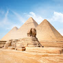
الاهرامات
الأهرامات المصرية هي هياكل حجرية قديمة موجودة بمصر، بنيت في فترتي المملكة القديمة والوسطى ليدفن فيها الملوك وزوجاتهم. اكتشفت ما لا يقل عن 138 هرم في مصر. أقدمها هو هرم زوسر بسقارة والذي بُني بتاريخ حول 2630–2610 قبل الميلاد في عهد الأسرة الثالثة، وهو أقدم مبنى بالطوب المصقول في العالم.
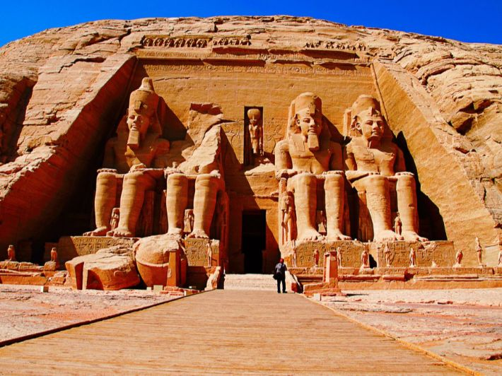
معبد الاقصر
يعد هذا المعلم نصباً تذكارياً في قلب المدينة، ويطلق عليه اسم الحرم الجنوبي، والذي يعد عبارة عن مجمع يحوي عدداً من المرافق، ففيه معبد مكون من عدة غرف ومحكمة ومسجد وساحات وقاعات وتماثيل وغيرها من المرافق الأثرية الرائعة،

قريه شالي بواحه سيوه
قرية شالي بواحة سيوة تقع بمحافظة مطروح. "شالي" كلمة باللغة السيوية تعنى المدينة، بنيت قرية شالي من مادة الكرشيف وهو الطين المشبع بالملح إذا جف يصبح شبيها بالأسمنت في صلابته وهو أسلوب من البناء فريد من نوعه،
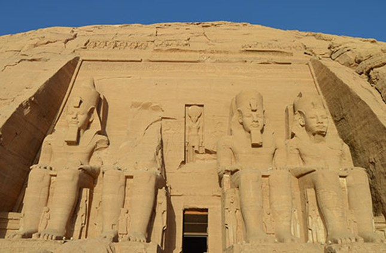
ابو سمبل
الواقع في النوبة بالقرب من الحدود الجنوبية من بين المعالم الأكثر روعة في مصر، بناه الملك رمسيس الثاني من الأسرة التاسعة عشرة تم قطعه كاملاً في الجبل، حوالي عام 1264 قبل الميلاد.يشتهر المعبد بتماثيله الأربعة الضخمة جالسة والتي تزين واجهته والتي انهار أحدها بسبب زلزال قديم ولا تزال بقاياه على الأرض.
museums
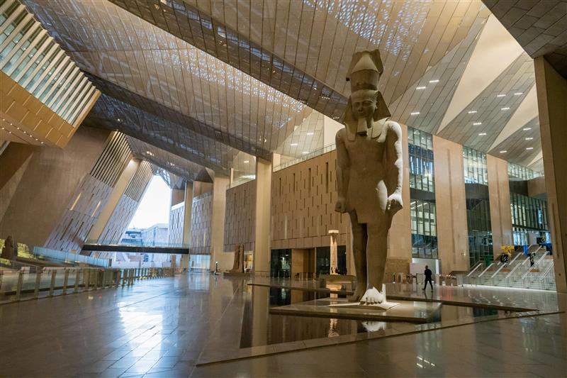
المتحف المصري
تشمل زيارتكم قاعات الملك توت عنخ آمون، قاعات العرض الرئيسية، البهو العظيم، الدرج العظيم، متحف مراكب خوفو، المنطقة التجارية، والحدائق الخارجية، لتعيشوا تجربة استثنائية تجمع بين عراقة التاريخ وروعة التصميم المعاصر.
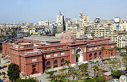
المتحف المصري
جاءت فكرة إنشائه في عام
1895 وافتتحه الخديوي عباس حلمي الثاني عام 1902.
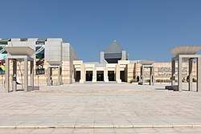
المتحف القومي المصري
وضع حجر الأساس للمتحف في عام 2002، وافتتح قاعة العرض المؤقت عن الحرف المصرية في عام 2017، وافتتحت قاعة العرض المركزي في عام 2021 بعد استقباله لموكب المومياوات الملكية، وقاعة النسيج المصري في عام 2022.
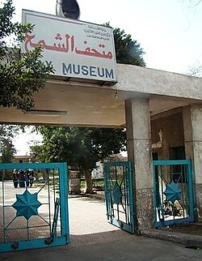
متحف-الشمع
أنشئ الفنان فؤاد عبد الملك المتحف في صيف عام 1934 في قصر تيجران باشا ثم انتقل إلى فيلا بشارع قصر العيني ثم نقلت محتوياته إلى مقره الحالي بحلوان والذى افتتح في 6 أغسطس 1950، وهو مغلق حاليا للصيانة.
beaches
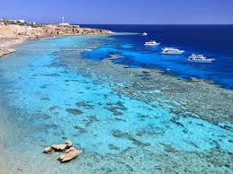
راس ام السيد "بشرم الشيخ"
مشهور بجرف صخري وشعاب مرجانية مذهلة، وهو مقصد أول لعشاق الغوص والسنوركلينج.
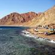
"دهب "بلو لاجون
بقعة منعزلة وهادئة، مثالية للاسترخاء، التخييم، وركوب الأمواج (كايت سيرفنج).
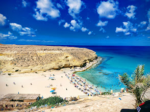
شاطئ عجيبه
يتميز بصخوره الفريدة ومياهه ذات الألوان المتدرجة، ويسمى "مالديف مصر".
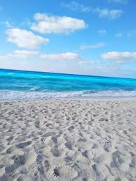
شواطئ الساحل الشمالي
تتميز برمالها البيضاء النقية والمياه الفيروزية الهادئة، وتعتبر من أرقى الوجهات الصيفية.
Religious
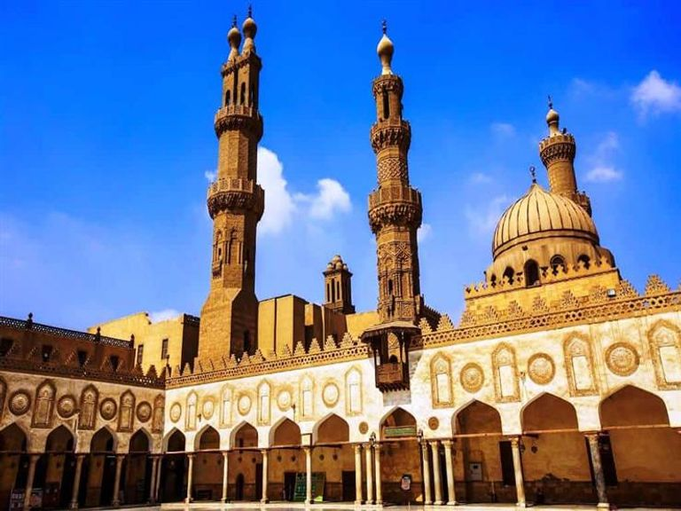
الازهر الشريف
تأسست جامعة الأزهر عام 975 م على يد الفاطميين في مصر التي لُقبت بـ الفاطمية نسبةً للإبنة الصغرى للنبي محمد صلى الله عليه وسلم فاطمة الزهراء، وسميت الجامعة على شرفها، ويُعد جامع الأزهر من أهم المراجع في العالم الإسلامي.
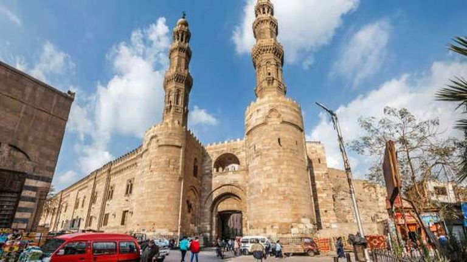
باب زويله
تم بناء باب زويلة في عام 485هـ/ 1092م، وكان موقعا للإعدام خلال العصر المملوكي، والآن هو البوابة الوحيدة الجنوبية المُتبقية لمدينة القاهرة التي تعود إلى العصور الوسطى.
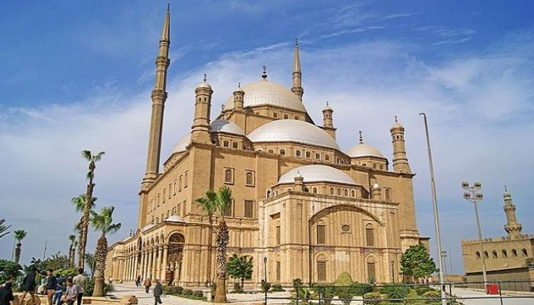
مسجد محمد علي
يقع مسجد محمد علي داخل قلعة صلاح الدين الأيوبي في القاهرة، تم بناء هذا المسجد في عهد محمد على باشا عام 1848م في موقع القصور المملوكية ، ويُعد أبرز المساجد التي تتميز بالطابع الأثري في مصر.
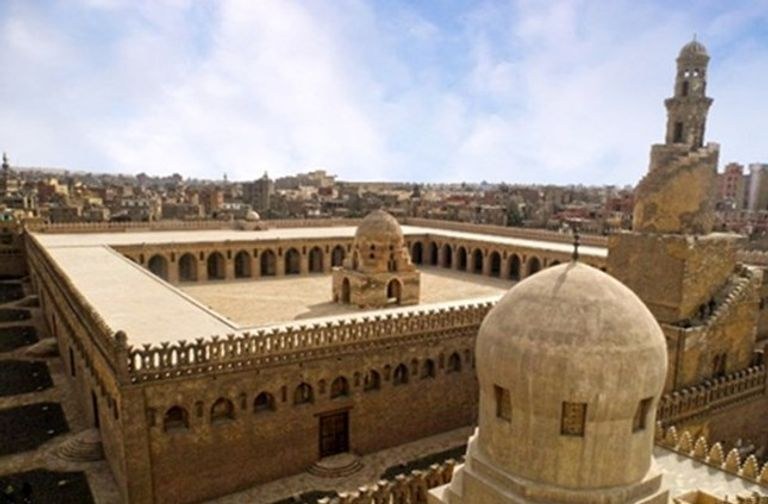